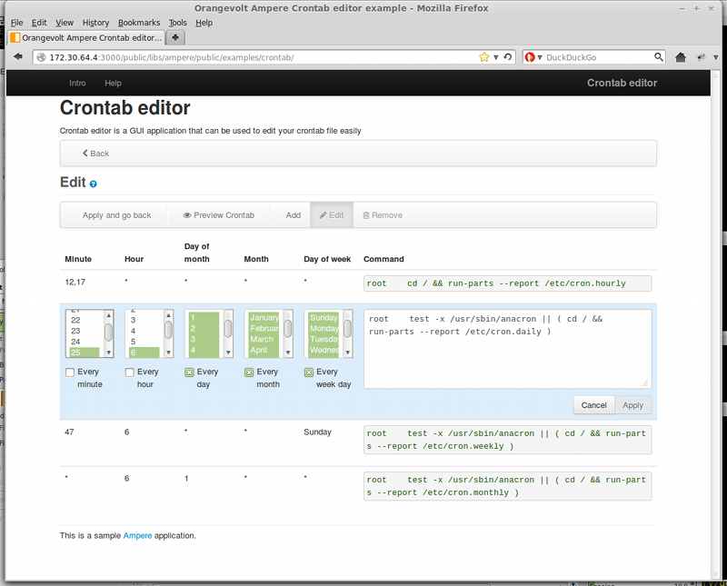
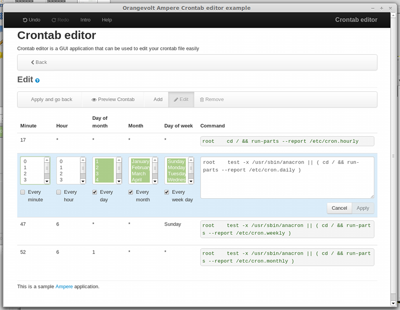
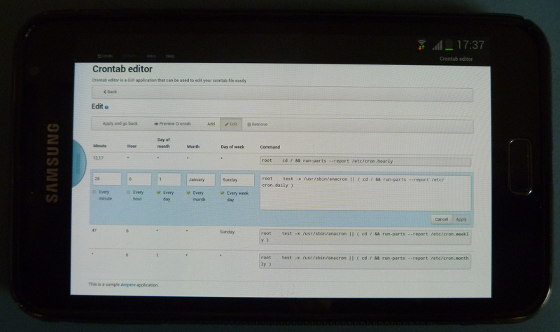

Orangevolt Ampere
Scalable single web page applications made easy.
Created by Lars Gersmann / orangevolt.com
About
Orangevolt Ampere is a technology do define programs by modeling your application as a state machine.
Why Ampere
Whats missing in existing SPA frameworks ?
- Routes are stateless
- Routes have no dependencies.
- Data is passed by route parameters
- Reusability is problematic
Why Ampere
Ampere applications are modeled as states and transitions instead of routes.
- States encapsulate logic
- Transitions are directed routes between states
- Transitions manage data between states
- Ampere modules provide reusability
What else ?
- Infinite Undo/Redo support
- Transitions are transactional
- Everything is a Deferred/Promise
- Reusable as Ampere modules
- Simplification
And now the burner ...
You can explain your application with non programmers !

Ampere Essentials
Ampere consists of
Ampere Essentials
Ampere
- named singleton / domain object
- encapsulates modules.
- can separate the same module differently configured
* In most cases you will work with the default Ampere domain. Working with mutliple Ampere instances makes only sense in very complex applications.
Ampere Essentials
Module
- encapsulates associated states and transitions.
- splices complex applications in handy units.
- reusable by other modules
- provides events
- configurable
*A good example for an module is an addressbook. You can develop the whole thing completely independent. It might be used as a standalone application. It can be part of another module utilising an addressbook. A module is similar to a Android Intent.
Ampere Essentials
State
- represents a specific state of your module
- keeps the data associated with the state
- contains the logic operating on state data
- has view(s)
- configurable
* An example: A state representing an "addressbook list" will keep the addressbook data (the model) and the logic to operate on the data. Logic means functions for create, edit or delete an addressbook entry.
Ampere Essentials
State view
* In most cases a single view is applied to a state. An example for multiple views is a default view and a separate "print" view. If no views were defined by a state, Ampere will generate a default view based on the state definition.
Ampere Essentials
Transition
- represents the directed junction between 2 states
- is transactional
- can operate on source and target state data
- may be reversible (Undo/Redo support)
- can be disabled depending on custom logic
- configurable
* The transition is probably the most powerful piece of Ampere. It takes care of the atomicity of transition actions, manages the state of completeness and many more.
Ampere Essentials
UI
- is responsible for rendering the current state of a module
- has a master layout (builtin: default, wizard and none)
- owned by module
- controls and utilities to simplify state views
- consumes ui related options of state, view, module and transition for rendering
- configurable
* The UI is provided as part of Ampere. You may apply additional controls to the UI. Or even a custom master layout. Master layout use case : Suppose you want to write a wizard - in this case you tell the UI to use the "wizard" master layout.
From Vaporware to Software
- First papers on Ampere were published in 2002.
- Ampere technology has gotten reality with its first incarnation in 2003 using Java/Swing/Rhino JS Engine.
- a new prototype was created in 2007 using Eclipse technology SWT/JFace solving the databinding issue.
- Todays cutting edge web technologies AngularJS, HTML5, jQuery and Twitter Bootstrap gave a brand new shiny Ampere implementation birth:
jquery.orangevolt-ampere
jquery.orangevolt-ampere is a full fledged Ampere implementation for
- browser
- desktop
- and mobile app development
jquery.orangevolt-ampere
Write once, run anywhereÄhem ... Ok, almost anywhere :-)
|

Browser (FF/Safari/Chrome/IE10/Opera) |

Desktop application packaged with node-webkit (Win/OSX/Linux) |
 Mobile app packaged with Apache Cordova / Phonegap (iOS, Android, Blackberry, Windows Phone etc) |
jquery.orangevolt-ampere
jquery.orangevolt-ampere is based on
- History/Validation : HTML5
- Core : Javascript / jQuery
- Templating/Databinding : AngularJS
- UI : Twitter Bootstrap / Font Awesome
- CSS : LessCSS
- Build system : GruntJS
since sliced bread Ampere applications are single web page applications which can be used online AND offline.
- Infinite Undo/Redo support
- Transitions are transactional
- Everything is a Deferred/Promise
- Reusable as Ampere modules
- Simplifies development
Vertical Slides
Slides can be nested inside of other slides, try pressing down.
Basement Level 1
Press down or up to navigate.
Basement Level 2
Cornify

Basement Level 3
That's it, time to go back up.
Point of View
Press ESC to enter the slide overview. Hold down alt and click on any element to zoom in on it using zoom.js. Alt + click anywhere to zoom back out.
rvl.io
If you don't like writing slides in HTML you can use the online editor rvl.io.
Works in Mobile Safari
Try it out! You can swipe through the slides and pinch your way to the overview.
Marvelous Unordered List
- No order here
- Or here
- Or here
- Or here
Fantastic Ordered List
- One is smaller than...
- Two is smaller than...
- Three!
Transition Styles
You can select from different transitions, like:
Cube -
Page -
Concave -
Zoom -
Linear -
Fade -
None -
Default
Themes
Reveal.js comes with a few themes built in:
Sky -
Beige -
Simple -
Serif -
Night -
Default
* Theme demos are loaded after the presentation which leads to flicker. In production you should load your theme in the <head> using a <link>.
Global State
Set data-state="something" on a slide and "something"
will be added as a class to the document element when the slide is open. This lets you
apply broader style changes, like switching the background.
"blackout"
"soothe"
Custom Events
Additionally custom events can be triggered on a per slide basis by binding to the data-state name.
Reveal.addEventListener( 'customevent', function() {
console.log( '"customevent" has fired' );
} );
Clever Quotes
These guys come in two forms, inline:
The nice thing about standards is that there are so many to choose from
and block:
For years there has been a theory that millions of monkeys typing at random on millions of typewriters would reproduce the entire works of Shakespeare. The Internet has proven this theory to be untrue.
Pretty Code
function linkify( selector ) {
if( supports3DTransforms ) {
var nodes = document.querySelectorAll( selector );
for( var i = 0, len = nodes.length; i < len; i++ ) {
var node = nodes[i];
if( !node.className ) ) {
node.className += ' roll';
}
};
}
}
Courtesy of highlight.js.
Intergalactic Interconnections
You can link between slides internally, like this.
Fragmented Views
Hit the next arrow...
... to step through ...
any type- of view
- fragments
Fragment Styles
There's a few styles of fragments, like:
grow
shrink
roll-in
fade-out
highlight-red
highlight-green
highlight-blue
Spectacular image!

Export to PDF
Presentations can be exported to PDF, below is an example that's been uploaded to SlideShare.
Take a Moment
Press b or period on your keyboard to enter the 'paused' mode. This mode is helpful when you want to take distracting slides off the screen during a presentation.
Stellar Links
It's free
License
jquery.orangevolt-ampere is dual licensed under MIT and GPL2 .
Donations
jquery.orangevolt-ampere is entirely free but if you'd like to support the project you can donate below. Donations will go towards hosting and domain costs.